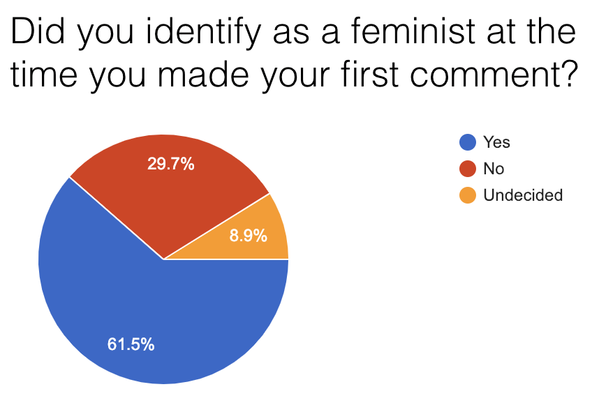

SOC 412: Designing Field Experiments at Scale
Online platforms, which monitor and intervene in the lives of billions of people, routinely host thousands of experiments to evaluate policies, test products, and contribute to theory in the social sciences. These experiments are also powerful tools to monitor injustice and govern human and algorithm behavior. How can we do field experiments at scale, reliably, and ethically?

What You Learn
In this hands-on undergraduate class (gradstudents are welcome), students will develop practical experimentation skills, engaging with methods, theory, ethics, and politics of large-scale behavioral research online. For a final project, student teams will develop, conduct, and report on a novel experiment together with an online community or platform.
By the end of the semester, you will be able to:- Design, conduct, and interpret a novel online field experiment
- Write and critique a scholarly article reporting the results of the experiment
- Design and analyze research from the perspective of rapid experimentation and reproduction in social science and industry
- Critically read, interpret, and imagine replications of the quantitative content of many field experiments in the social sciences
- Understand the kinds of knowledge that experiments bring to policy, product design, and theories in the social sciences, as well as their limitations
- Engage with debates on the ethics and politics of experiments in your own work
Example Final Projects
Promoting Inclusion and Participation in an Online Gender-Related Discussion Community
Many users join gender-related discussions online to discuss current events and their personal experiences. However, people sometimes feel unwelcome those communities for two reasons. First of all, they may be interested in participating in constructive discussions, but their opinions differ from the a community's vocal majority. Accordingly, they feel uncomfortable voicing these opinions due to fear of an overwhelmingly negative reaction. Furthermore, as we discovered in a survey, some participants in online gender conversations oppose feminism and wish to make the experience uncomfortable for commenters.
In this ongoing study, two undergraduate students worked with moderators of an online community to test the effects on newcomer participation of interventions that provide first-time participants with more accurate information about the values of the community and its organizers.
🗳 Auditing Facebook and Google Election Ad Policies 🇺🇸
Austin Hounsel developed software to generate advertisements and direct volunteers to test and compare the boundaries of Google and Facebook's election advertising policies. In the class, Austin chose statistical methods and developed an experiment plan in the class. Our findings were published in The Atlantic and will also be submitted in a computer science conference paper (full code, data, and details are available on Github).
In this study, we asked how common these mistakes are and what kinds of ads are mistakenly prohibited by Facebook and Google. Over 23 days, 7 U.S. citizens living inside and outside the United States attempted to publish 477 non-election advertisements that varied in the type of ad, its potentially-mistaken political leaning, and its geographic targeting to a federal or state election voter population. Google did not prohibit any of the ads posted. Facebook prohibited 4.2% of the submitted ads.
About the Instructor

J. Nathan Matias, PhD, is a computational social scientist who organizes citizen behavioral science toward a fairer, safer, more understanding internet. Nathan teaches in the department of sociology and is a post-doctoral researcher at the Paluck Lab in psychology and the Center for Information Technology Policy. He is also a visiting scholar at the MIT Center for Civic Media.
Nathan is the founder of CivilServant, a nonprofit that supports community-led behavioral science—conducting independent, public-interest audits and evaluations of social technologies. CivilServant achieves this through software systems that coordinate communities to conduct their own A/B tests on social issues. Nathan has worked with communities of millions of people to test ideas to prevent online harassment, broaden gender diversity on social media, manage human/algorithmic misinformation, and audit algorithms.